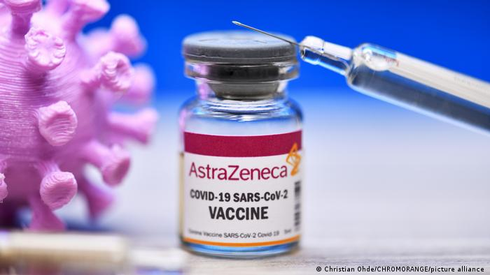

de Maringá
de MaringáSegundo estudos, 3ª dose da AstraZeneca aumenta resposta imunológica
De acordo com estudos divulgados pela Universidade de Oxford, uma terceira dose da vacina AstraZeneca pode aumentar a resposta imune.
A Universidade de Oxford afirma, segundo estudos realizados, porém ainda não revisados por pares, que uma terceira dose da vacina de Oxford-AstraZeneca aumenta a resposta imune ao novo coronavírus. Ela também indica que ao estender o prazo de aplicação entre a primeira e segunda dose para 45 semanas opera um efeito semelhante.
Para a pesquisa, foram estudadas 90 pessoas que tomaram uma terceira dose da vacina e outras 30 que aguardaram um período de 45 semanas entre a primeira dose e a segunda. Os resultados foram o aumento de anticorpos por pelo menos 1 ano com a primeira e segunda dose; já com a terceira houve o aumento de seis vezes dos anticorpos, resultando em maior atividade neutralizante.
O estudo demonstrou que um intervalo mais longo não é prejudicial, muito pelo contrário, ele aprimora a resposta imunológica. Essa descoberta pode colaborar com o sistema de vacinação de diversos países.
